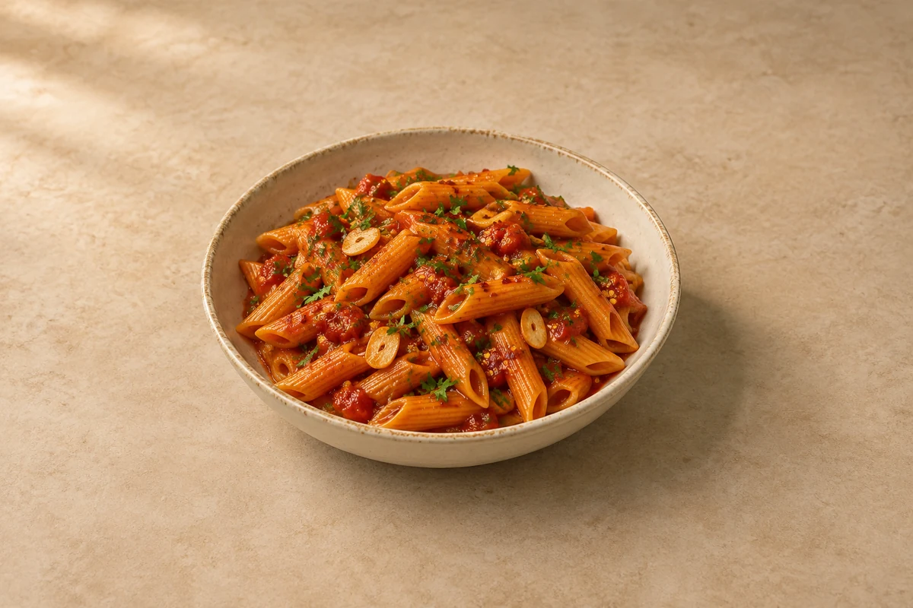

Pasta
Penne Arrabbiata
A punchy tomato sauce with garlic, chilli and olive oil. Serves 2.
Time to allow: 30 min total
Prep10 mins
Cook20 mins
people
Ingredient quantities update automatically

Ingredients
Method
Start the sauce
Heat the olive oil in a large frying pan over a medium-low heat. Add the garlic and chilli flakes. Cook gently for 1–2 minutes until fragrant, keeping the garlic pale.Add the tomatoes
Stir in the tomato purée and cook for 1 minute. Add the plum tomatoes and their juice, crushing them with a spoon. Add the measured salt.Simmer
Cook uncovered for 15–20 minutes, stirring occasionally, until thickened. Taste and adjust the chilli and seasoning.Cook the pasta
Meanwhile, boil the penne in salted water until 1 minute short of the packet cooking time. Reserve a mug of pasta water before draining.Bring together
Add the penne to the sauce with 50 ml reserved pasta water. Toss over a medium heat for 1–2 minutes, adding a little more water as needed, until the sauce coats the pasta.Finish
Stir through most of the parsley, divide between bowls and scatter over the rest.
Tips & leftovers
Storage & leftovers
Cool promptly, refrigerate covered within 2 hours and eat within 48 hours.
Freezing
Freeze cooled portions for up to 2 months for best quality. Pasta softens after freezing; freezing the sauce separately gives a better result. The tomato sauce freezes particularly well on its own.
Reheating
Reheat once in a pan with a splash of water, stirring until steaming hot throughout. Add fresh herbs or cheese after heating.
Substitutions
Use rigatoni or another short pasta. Chopped tomatoes can replace plum tomatoes; reduce to the same thick consistency. Adjust chilli gradually, especially with a different brand.
Keeping leftovers safe
Cool cooked leftovers in small portions and refrigerate within 2 hours. Keep the fridge at 0–5°C and the freezer around −18°C. Freeze suitable leftovers promptly. Defrost fully in the fridge and use within 24 hours. Reheat only once, until steaming hot all the way through. Follow any shorter use-by or opened-pack instructions; using older cooked ingredients does not restart their storage time.
Food-safety guidance: Food Standards Agency: chilling and freezing · reheating leftovers.